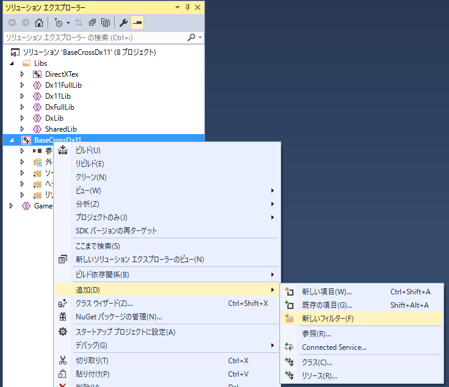
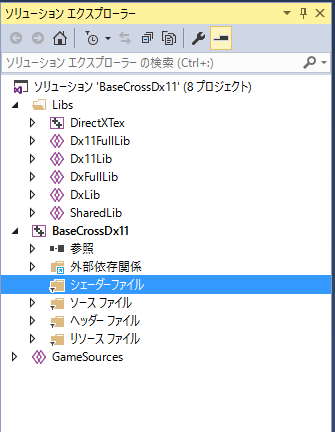
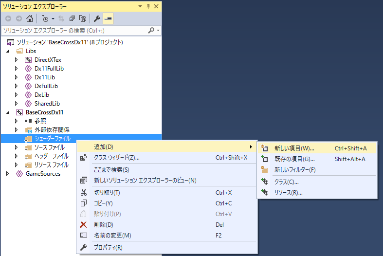
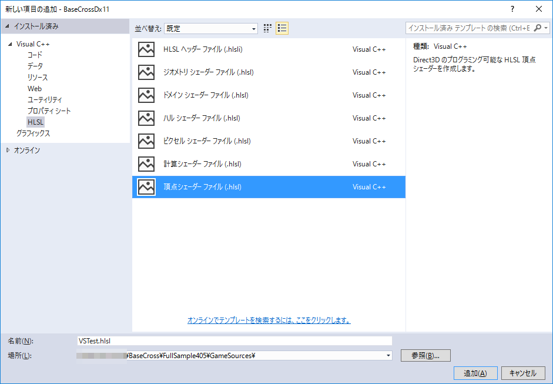
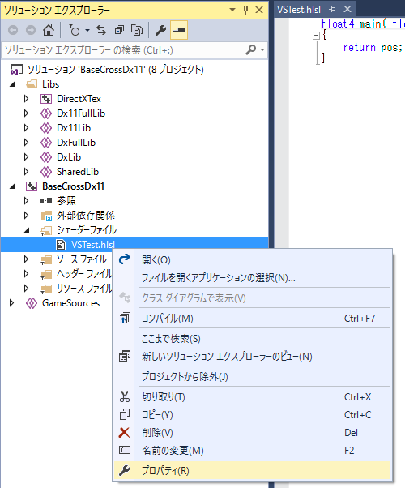
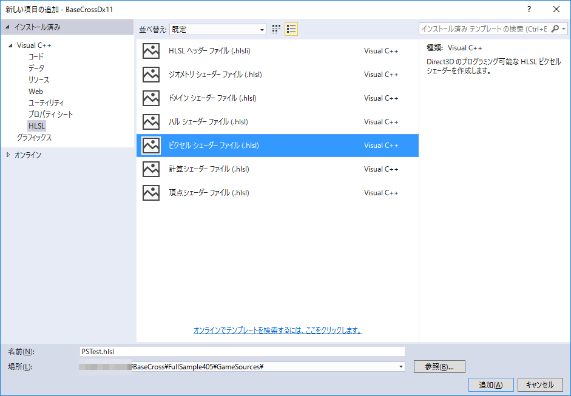
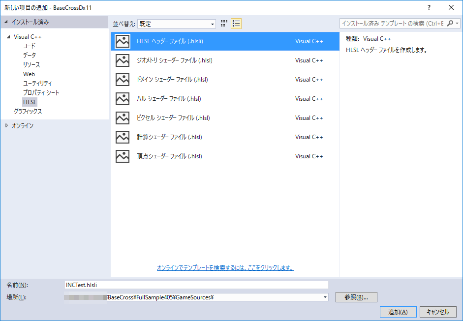

４．Draw系コンポーネント
４０５．シェーダを自作する
この項ではシェーダを自作する方法について説明します。FullSample405を実行すると以下のような画面が現れます。

図0405a
中心にある茶色い球体は自作シェーダによる描画です。内容的にはPNTStatic描画コンポーネントの簡略版となります。シェーダを自作するということは描画を自分で記述する、ということです。描画コンポーネントでは対応してない処理や表現が実装できます。
シェーダを自作する手順は大きく以下のようになります。なお今回は頂点シェーダとピクセルシェーダの自作です。
１、頂点シェーダの準備と記述 ２、ピクセルシェーダの準備と記述 ３、インクルードファイルの準備と記述 ４、シェーダクラスの作成（コンスタントバッファ、頂点、ピクセル） ５、描画処理
１、頂点シェーダの準備と記述
まず、以下のようにシェーダのフィルタを作成します。これは必須ではないですが、シェーダのコードをC++と分けるためにも行ったほうがいいと思います。フィルタは以下のようにソリューションエクスプローラで新しいフィルタとして作成します。
図0405b

図0405c
続いて、作成したShaderSourcesフィルタに追加・新しい項目の追加を選びます。
図0405d
すると以下のような画面がでますので頂点シェーダを選びます。シェーダ名をVSTest.hlslとし、作成するディレクトリをGameSourcesディレクトリにShaderSourcesのサブディレクトリを作成し、指定します。
図0405e
ファイルが作成されます。
図0405f
作成したファイルのプロパティを選びます。

図0405g
構成プロパティのHLSLコンパイラの出力ファイルが、$(SolutionDir)media\Shaders\%(Filename).cso
続いてコードの記述です。頂点シェーダVSTest.hlslは以下のように記述します。
struct VSPNTInput
{
float4 position : SV_POSITION;
float3 norm : NORMAL;
float2 tex : TEXCOORD;
};
struct PSPNTInput
{
float4 position : SV_POSITION;
float3 norm : NORMAL;
float2 tex : TEXCOORD;
};
cbuffer ParametersBuffer : register(b0)
{
float4x4 World : packoffset(c0);
float4x4 View : packoffset(c4);
float4x4 Projection : packoffset(c8);
float4 Emissive : packoffset(c12);
float4 Diffuse : packoffset(c13);
float4 LightDir : packoffset(c14);
};
PSPNTInput main(VSPNTInput input)
{
PSPNTInput result;
//頂点の位置を変換
float4 pos = float4(input.position.xyz, 1.0f);
//ワールド変換
pos = mul(pos, World);
//ビュー変換
pos = mul(pos, View);
//射影変換
pos = mul(pos, Projection);
//ピクセルシェーダに渡す変数に設定
result.position = pos;
//ライティング
result.norm = mul(input.norm, (float3x3)World);
result.norm = normalize(result.norm);
//テクスチャUV
result.tex = input.tex;
return result;
}
２、ピクセルシェーダの準備と記述
同様の手順でピクセルシェーダも作成します。ファイル名はPSTest.hslsとします。
図0405h
以下がコードです。
struct VSPNTInput
{
float4 position : SV_POSITION;
float3 norm : NORMAL;
float2 tex : TEXCOORD;
};
struct PSPNTInput
{
float4 position : SV_POSITION;
float3 norm : NORMAL;
float2 tex : TEXCOORD;
};
cbuffer ParametersBuffer : register(b0)
{
float4x4 World : packoffset(c0);
float4x4 View : packoffset(c4);
float4x4 Projection : packoffset(c8);
float4 Emissive : packoffset(c12);
float4 Diffuse : packoffset(c13);
float4 LightDir : packoffset(c14);
};
Texture2D g_texture : register(t0);
SamplerState g_sampler : register(s0);
float4 main(PSPNTInput input) : SV_TARGET
{
//ライティング
float3 lightdir = normalize(LightDir.xyz);
float4 Light = (saturate(dot(input.norm, -lightdir)) * Diffuse) + Emissive;
Light.a = Diffuse.a;
Light = g_texture.Sample(g_sampler, input.tex) * Light;
return Light;
}
３、インクルードファイルの準備と記述
両方のシェーダのコードを見てみると、上のほうに共通の構造体などがあると思います。これらはまとめておいたほうが修正があったときなどに間違いがなくて良いです。シェーダの追加の要領でファイルの追加でHLSLヘッダーファイルを選びINCTest.hlsliを作成します。

図0405i
そしてそのファイルに以下のように記述します。
struct VSPNTInput
{
float4 position : SV_POSITION;
float3 norm : NORMAL;
float2 tex : TEXCOORD;
};
struct PSPNTInput
{
float4 position : SV_POSITION;
float3 norm : NORMAL;
float2 tex : TEXCOORD;
};
cbuffer ParametersBuffer : register(b0)
{
float4x4 World : packoffset(c0);
float4x4 View : packoffset(c4);
float4x4 Projection : packoffset(c8);
float4 Emissive : packoffset(c12);
float4 Diffuse : packoffset(c13);
float4 LightDir : packoffset(c14);
};
まず頂点シェーダ（VSTest.hlsl）です。
//共通の項目をインクルード
#include "INCTest.hlsli"
PSPNTInput main(VSPNTInput input)
{
PSPNTInput result;
//頂点の位置を変換
float4 pos = float4(input.position.xyz, 1.0f);
//ワールド変換
pos = mul(pos, World);
//ビュー変換
pos = mul(pos, View);
//射影変換
pos = mul(pos, Projection);
//ピクセルシェーダに渡す変数に設定
result.position = pos;
//ライティング
result.norm = mul(input.norm, (float3x3)World);
result.norm = normalize(result.norm);
//テクスチャUV
result.tex = input.tex;
return result;
}
//共通の項目をインクルード
#include "INCTest.hlsli"
Texture2D g_texture : register(t0);
SamplerState g_sampler : register(s0);
float4 main(PSPNTInput input) : SV_TARGET
{
//ライティング
float3 lightdir = normalize(LightDir.xyz);
float4 Light = (saturate(dot(input.norm, -lightdir)) * Diffuse) + Emissive;
Light.a = Diffuse.a;
Light = g_texture.Sample(g_sampler, input.tex) * Light;
return Light;
}
４、シェーダクラスの作成（コンスタントバッファ、頂点、ピクセル）
シェーダは作成したのですが、シェーダとC++のインターフェイスを考えなくてはいけません。BaseCrossでは、その橋渡し役としてコンスタントバッファクラス、頂点シェーダクラス、ピクセルシェーダクラスがあります。これらをマクロで作成します。ProjectShader.hを開き、以下のように記述します。
//--------------------------------------------------------------------------------------
/// コンスタントバッファ構造体
//--------------------------------------------------------------------------------------
struct TestConstants
{
/// ワールド行列
Matrix4X4 World;
/// ビュー行列
Matrix4X4 View;
/// 射影行列
Matrix4X4 Projection;
/// エミッシブ色
Color4 Emissive;
/// デフューズ色
Color4 Diffuse;
/// ライイト方向
Vector4 LightDir;
TestConstants() {
memset(this, 0, sizeof(TestConstants));
Diffuse = Color4(1.0f, 1.0f, 1.0f, 1.0f);
};
};
//コンスタントバッファ用マクロ
DECLARE_DX11_CONSTANT_BUFFER(CBTest, TestConstants)
//頂点シェーダ用マクロ
DECLARE_DX11_VERTEX_SHADER(VSTest, VertexPositionNormalTexture)
//ピクセルシェーダ用マクロ
DECLARE_DX11_PIXEL_SHADER(PSTest)
//コンスタントバッファ用マクロ DECLARE_DX11_CONSTANT_BUFFER(CBTest, TestConstants)
続いて頂点シェーダは
//頂点シェーダ用マクロ DECLARE_DX11_VERTEX_SHADER(VSTest, VertexPositionNormalTexture)
続いてピクセルシェーダは
//ピクセルシェーダ用マクロ DECLARE_DX11_PIXEL_SHADER(PSTest)
以上のマクロ呼び出してCBTestクラス、VSTestクラス、PSTestクラスが宣言されます。
シェーダクラスの実装はProjectShader.cppに実体記述用マクロを記述します。以下がその内容です。
//コンスタントバッファ実体マクロ IMPLEMENT_DX11_CONSTANT_BUFFER(CBTest) //頂点シェーダ実体マクロ IMPLEMENT_DX11_VERTEX_SHADER(VSTest, App::GetApp()->GetShadersPath() + L"VSTest.cso") //ピクセルシェーダ実体マクロ IMPLEMENT_DX11_PIXEL_SHADER(PSTest, App::GetApp()->GetShadersPath() + L"PSTest.cso")
コンスタントバッファはクラス名だけ記述すれば大丈夫です。
シェーダクラスの構造
各シェーダは、マクロを追いかけていくとわかると思いますがシングルトンとして作成されます。そして最初の呼び出しでシェーダがメモリ上に構築される設計になっています。ゲーム盤には様々なオブジェクトが置かれます。当然使用するシェーダもそれぞれ違うわけですが、各オブジェクトごとにシェーダがメモリを占めたのでは同じ描画をするのに複数のシェーダが常駐するのでは無駄になります。また、使わないシェーダがメモリを占めるのも無駄です。（２Ｄのみのゲーム内に３Ｄのシェーダが常駐することを想像してみてください）。そのために上記のような設計になっています。５、描画処理
ここまでで準備が整ったので、いよいよ描画処理を記述します。描画を自分で行うにはOnDraw()関数を多重定義します。今回のサンプルではCharacter.h/cppにあるPntSphere::OnDraw()関数がそれにあたります。
void PntSphere::OnDraw() {
//メッシュの取得
auto MeshRes = App::GetApp()->GetResource<MeshResource>(L"DEFAULT_SPHERE");
//デバイスの取得
auto Dev = App::GetApp()->GetDeviceResources();
//デバイスコンテキストの取得
auto pD3D11DeviceContext = Dev->GetD3DDeviceContext();
//レンダーステートの取得
auto RenderState = Dev->GetRenderState();
//コンスタントバッファの準備
TestConstants Cb;
//行列の定義
auto PtrTrans = GetComponent<Transform>();
//行列の定義
Matrix4X4 World, ViewMat, ProjMat;
//ワールド行列の決定
World = PtrTrans->GetWorldMatrix();
//転置する
World.Transpose();
//カメラを得る
auto CameraPtr = OnGetDrawCamera();
//ビューと射影行列を得る
ViewMat = CameraPtr->GetViewMatrix();
//転置する
ViewMat.Transpose();
ProjMat = CameraPtr->GetProjMatrix();
//転置する
ProjMat.Transpose();
Cb.World = World;
Cb.View = ViewMat;
Cb.Projection = ProjMat;
//エミッシブ
Cb.Emissive = Color4(0.5f, 0.5f, 0.5f,0);
//デフィーズ
Cb.Diffuse = Color4(1, 1, 1, 1);
//ライティング
auto StageLight = OnGetDrawLight();
Cb.LightDir = StageLight.m_Directional;
Cb.LightDir.w = 1.0f;
//テクスチャ（シェーダリソース）の取得
auto Res = App::GetApp()->GetResource<TextureResource>(L"WALL_TX");
pD3D11DeviceContext->PSSetShaderResources(0, 1, Res->GetShaderResourceView().GetAddressOf());
auto pSampler = RenderState->GetLinearClamp();
//サンプラーを設定
pD3D11DeviceContext->PSSetSamplers(0, 1, &pSampler);
//コンスタントバッファの更新
pD3D11DeviceContext->UpdateSubresource(CBTest::GetPtr()->GetBuffer(), 0, nullptr, &Cb, 0, 0);
//ストライドとオフセット
UINT stride = MeshRes->GetNumStride();
UINT offset = 0;
//頂点バッファのセット
pD3D11DeviceContext->IASetVertexBuffers(0, 1,
MeshRes->GetVertexBuffer().GetAddressOf(), &stride, &offset);
//インデックスバッファのセット
pD3D11DeviceContext->IASetIndexBuffer(MeshRes->GetIndexBuffer().Get(),
DXGI_FORMAT_R16_UINT, 0);
//描画方法（3角形）
pD3D11DeviceContext->IASetPrimitiveTopology(D3D11_PRIMITIVE_TOPOLOGY_TRIANGLELIST);
//コンスタントバッファの設定
ID3D11Buffer* pConstantBuffer = CBTest::GetPtr()->GetBuffer();
//頂点シェーダに渡す
pD3D11DeviceContext->VSSetConstantBuffers(0, 1, &pConstantBuffer);
//ピクセルシェーダに渡す
pD3D11DeviceContext->PSSetConstantBuffers(0, 1, &pConstantBuffer);
//シェーダの設定
pD3D11DeviceContext->VSSetShader(VSTest::GetPtr()->GetShader(), nullptr, 0);
pD3D11DeviceContext->PSSetShader(PSTest::GetPtr()->GetShader(), nullptr, 0);
//インプットレイアウトの設定
pD3D11DeviceContext->IASetInputLayout(VSTest::GetPtr()->GetInputLayout());
//デプスステンシルステート
pD3D11DeviceContext->OMSetDepthStencilState(RenderState->GetDepthDefault(), 0);
//ブレンドステート
pD3D11DeviceContext->OMSetBlendState(RenderState->GetOpaque(), nullptr, 0xffffffff);
//ラスタライザステート
pD3D11DeviceContext->RSSetState(RenderState->GetCullBack());
//描画
pD3D11DeviceContext->DrawIndexed(MeshRes->GetNumIndicis(), 0, 0);
//後始末
Dev->InitializeStates();
}
BaseCrossの描画コンポーネントはこれらの処理をライブラリ側で行っているというわけです。
ただ、これらの処理は各オブジェクトごとに毎回設定を初期化するので、たった1つの描画なのに記述が多くなります。
複数のオブジェクトを管理するゲームオブジェクトを作成すれば、共通の処理はできるだけまとめて描画することができます。これらの最適化はゲームごとに違うので具体的には触れませんが、各自検討してみてください。